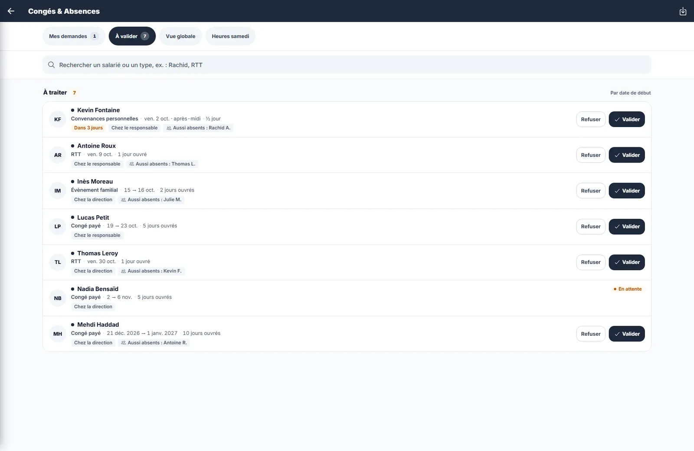
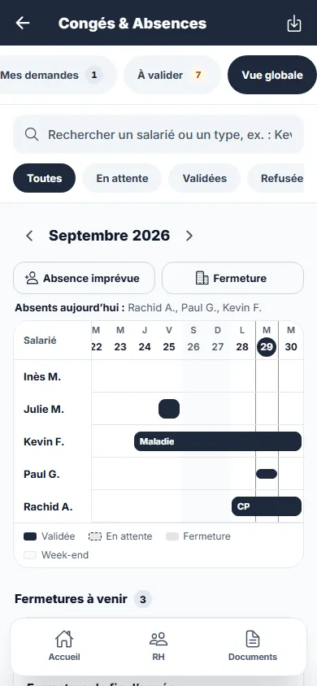
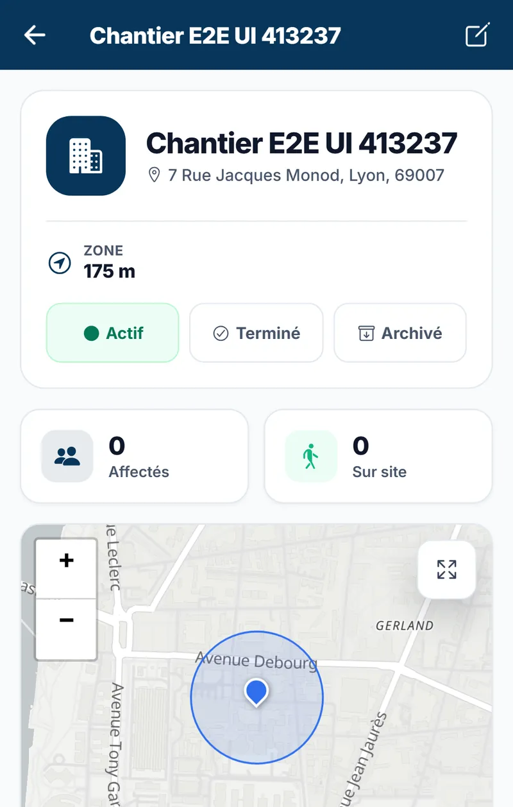
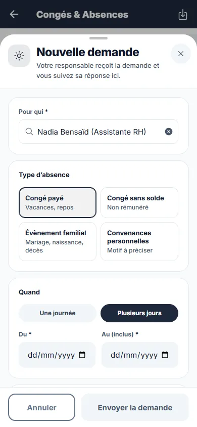

ProStage de fin d’études, 2026
BTP-360
L'application qui a remplacé les fichiers Excel de quatre entreprises du BTP.
Le Groupe Sûr France réunit quatre sociétés : Iso, Climat, Réseau et Distri. Recrutement, contrats, matériel, notes de frais, planning : tout passait par des fichiers Excel envoyés par mail. J'avais sept mois pour les remplacer par un seul outil, utilisable au bureau comme sur un chantier sans réseau.
Code privé, propriété du groupe.
4 sociétés dans une seule application47 modèles de données255 fichiers de tests unitaires54 suites de tests de bout en bout

Le point de départ
Les chefs d'équipe pointaient sur papier, les contrats étaient recopiés depuis un modèle Word, et personne ne savait vraiment quel outil se trouvait sur quel chantier.
Le vrai sujet n'était pas technique. Pour être adoptée, l'application devait être plus rapide qu'Excel, et utilisable avec des gants, en plein soleil, dans une cave sans 4G.
Ce que j’ai construit
- RH et contrats
- Contrats générés en PDF et DOCX à partir de modèles (convention collective, grille de classification BTP), dossiers salariés, absences validées en deux temps, habilitations avec alerte avant expiration.
- Terrain
- Pointage géolocalisé à l’entrée et à la sortie du chantier, un QR code par outil, bons de remise signés à l’écran.
- Finance
- Notes de frais lues par OCR directement sur le téléphone, même hors ligne, et demandes d’achat validées par la direction.
- Chantiers
- Planning au jour, à la semaine ou au mois, et gestion documentaire rangée par société et par chantier.
Les choix techniques
Hors ligne d'abord : chaque action faite sur le terrain est gardée dans une file NgRx, puis rejouée au retour du réseau. L'application est livrée sur Android avec Capacitor, ou installable en PWA.
Une seule base PostgreSQL, cloisonnée par société, cinq rôles, un journal d'audit et des données sensibles (numéro de sécurité sociale, salaire) chiffrées au repos. Les validations remontent en temps réel avec Socket.IO.
La mise en production
Docker Compose sur EC2 en région Paris, infrastructure décrite en Terraform, intégration et déploiement continus avec GitHub Actions, sauvegardes PostgreSQL scriptées, erreurs suivies dans Sentry.
Coder avec des agents IA
J'ai développé avec Claude Code et Codex, encadrés par des règles projet écrites (AGENTS.md, CLAUDE.md), des serveurs MCP et une relecture de chaque changement. Les 255 fichiers de tests et les 54 suites Playwright servent de filet : l'agent propose, les tests et moi décidons.
Ce que j’en retiens
Seul sur un projet de cette taille, on est obligé de tout écrire : la documentation, les décisions, les tests. C'est ce qui m'a permis d'aller vite sans casser ce qui marchait déjà.



Sur le terrain
- Application Android
- PWA au bureau
- File hors ligne
Client
- Ionic 8 + Angular 20
- NgRx
- Capacitor
- Tesseract.js (OCR)
API
- NestJS 11
- Socket.IO
- JWT + 5 rôles
- Swagger
Données
- PostgreSQL 16
- Prisma 7
- Fichiers chiffrés
Infrastructure
- AWS EC2 + S3
- Docker
- Terraform
- GitHub Actions
- Sentry